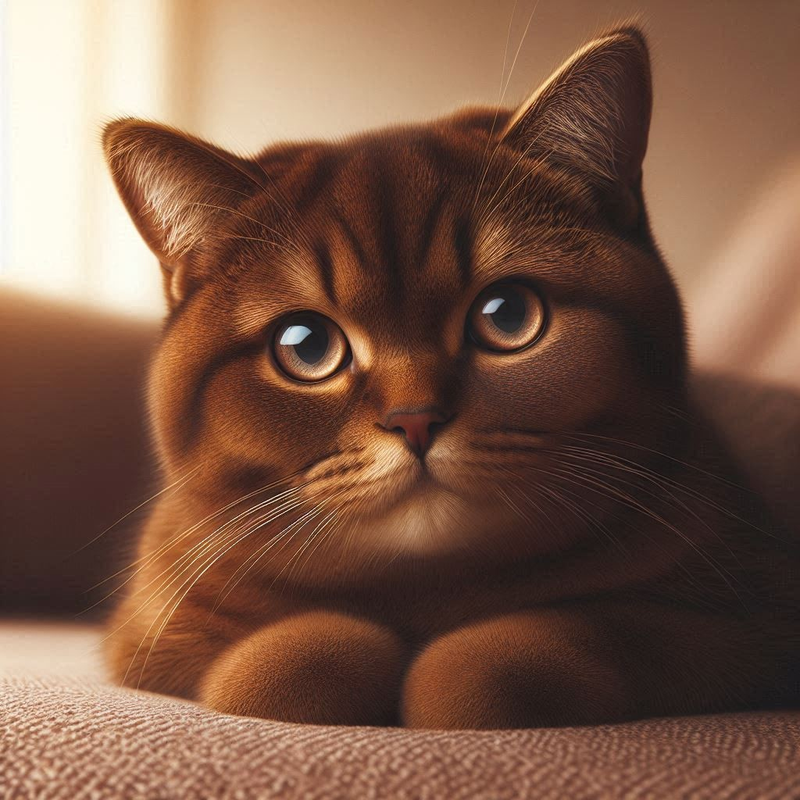

El gato guardián del inframundo
En el antiguo Egipto, los gatos eran considerados sagrados y se creía que tenían la capacidad de guiar a las almas al más allá. Bastet, la diosa con cabeza de gato, era vista como una protectora contra los malos espíritus y los desastres. Muchas familias egipcias tenían gatos en sus hogares como símbolo de buena fortuna y protección. Cualquier daño a un gato se castigaba severamente, incluso con la muerte.